| VUT速度 | GVT速度 | 切入横向位移 | 碰撞重叠率 |
|---|---|---|---|
| 60 / 80 | 30 / 40 | 2.75 m | -50% |
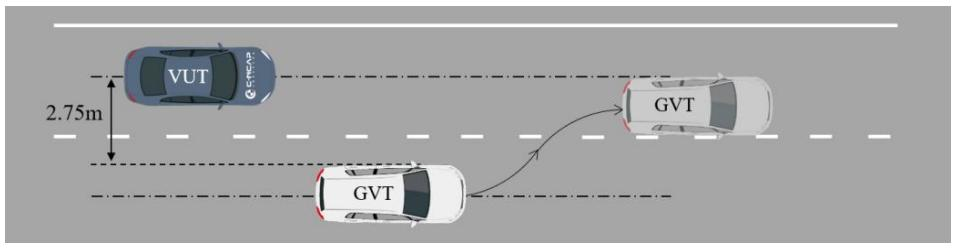
点击放大| VUT & VT速度 | 跟车距A(m) | GVT速度 | VT与GVT距离B(m) |
|---|---|---|---|
| 80 | 30 | 0 | 49 |
| 120 | 80 | 0 | 73 |
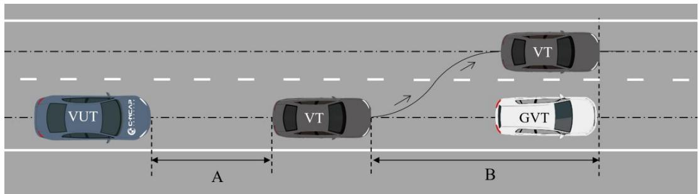
点击放大| VUT速度 | 车间时距 | GVT速度 | 距离A(m) | GVT减速度 |
|---|---|---|---|---|
| 60 | 1.0 s | 60 | 55 | -4 m/s² |
| 80 | 1.0 s | 80 | 84 | -4 m/s² |
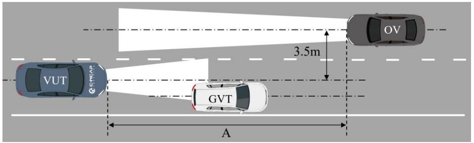
点击放大| VUT速度 | GVT速度 |
|---|---|
| 静止起步 (Start) | 50 |
| 40 | 40 |
| 60 | 50 |
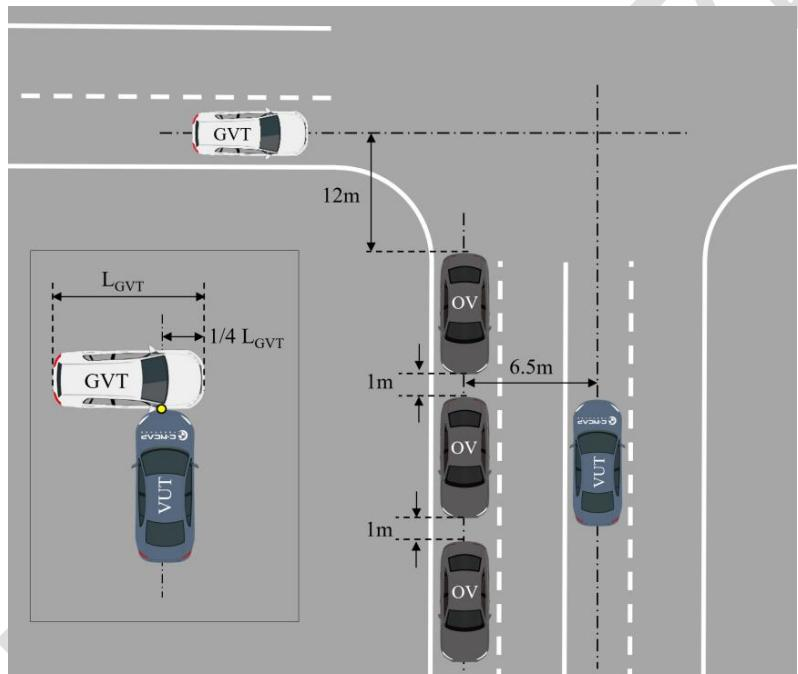
点击放大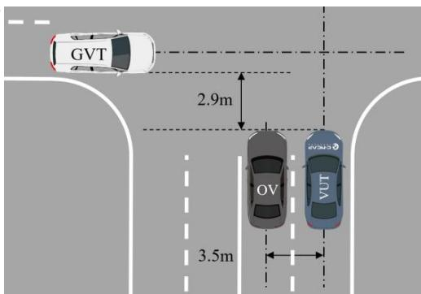
变体2 — 点击放大| VUT速度 | GVT速度 | 遮挡车距离A(m) |
|---|---|---|
| 静止起步 | 50 | 4 |
| 20 | 30 | 4 |
| 30 | 50 | 7 |
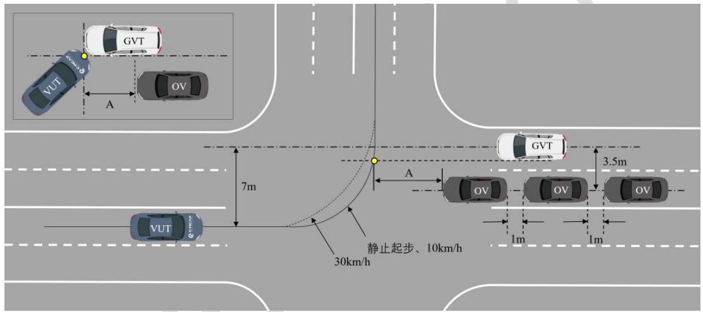
点击放大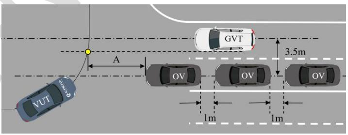
变体2 — 点击放大| VUT速度 | GVT速度 | 车间时距 | GVT减速度 |
|---|---|---|---|
| 40 | 40 | 1.0 s | -2 m/s² |
| 40 | 40 | 1.0 s | -6 m/s² |
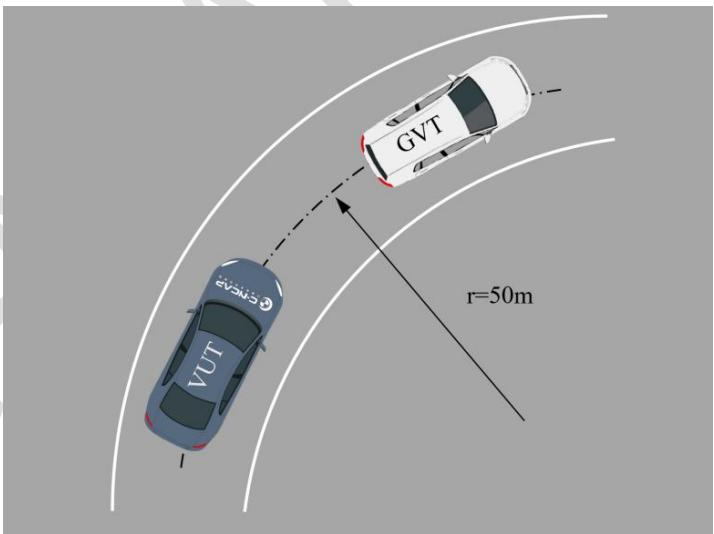
点击放大| VUT速度 | 碰撞重叠率 | GVT状态 | 降雨量 |
|---|---|---|---|
| 40 | -50% | 静止, 示廓灯 | 40±10 mm/h |
| 60 | 50% | 静止, 示廓灯 | 40±10 mm/h |
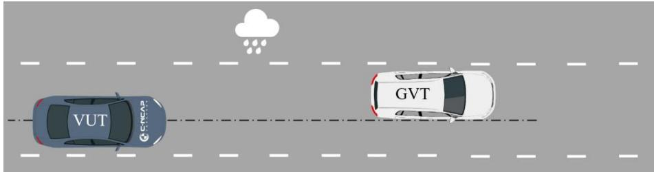
点击放大| VUT速度 | 碰撞重叠率 | GVT状态 | 能见度 |
|---|---|---|---|
| 40 | -50% | 静止, 示廓灯 | ≤ 50m |
| 60 | 50% | 静止, 示廓灯 | ≤ 50m |
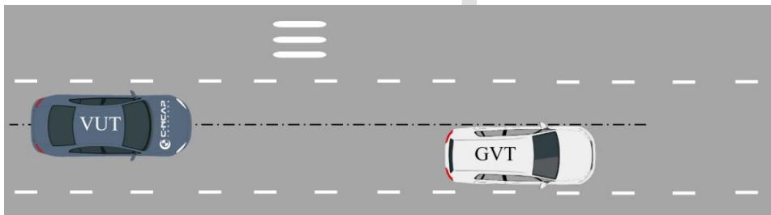
点击放大| VUT速度 | GVT速度 | 重叠率 |
|---|---|---|
| 60 / 80 | 40 / 60 | 50% |
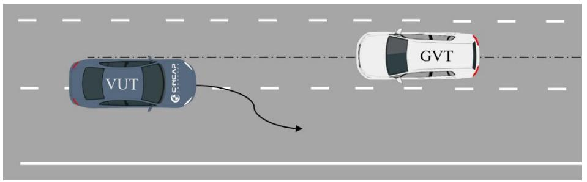
点击放大| VUT速度 | GVT速度 |
|---|---|
| 50 / 60 | 40 / 50 |
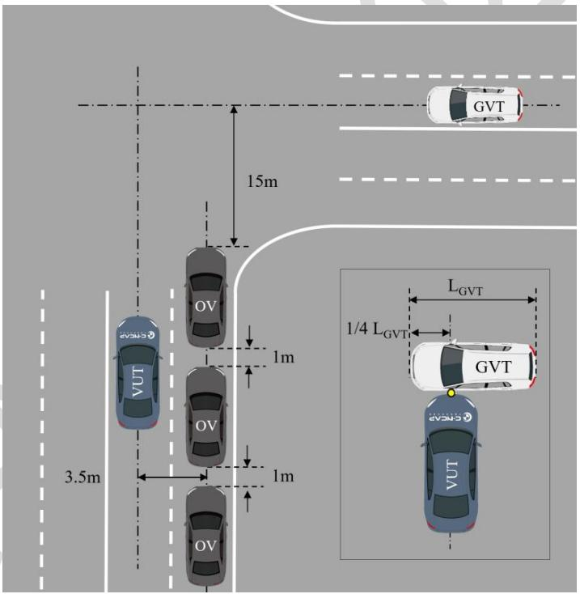
点击放大| VUT速度 | GVT速度 | VT速度 | VT减速度 |
|---|---|---|---|
| 50 / 60 | 40 / 50 | 30 / 40 | -4 m/s² |
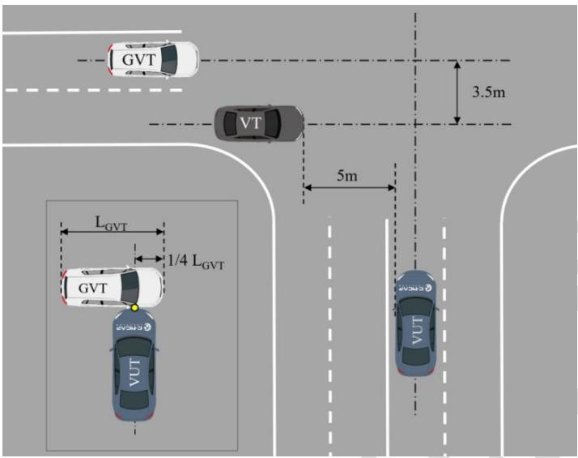
点击放大| VUT速度 | GVT速度 |
|---|---|
| 20 / 30 | 40 / 50 |
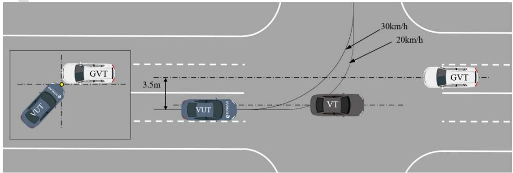
点击放大| 场景 | VUT速度 | GVT速度 |
|---|---|---|
| LCPf (远端) | 20 / 30 | 40 / 50 |
| LCPn (近端) | 20 / 30 | 40 / 50 |
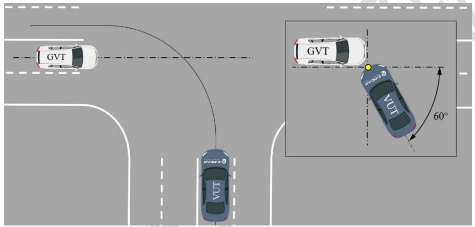
图1: LCPf 远端横穿 — 点击放大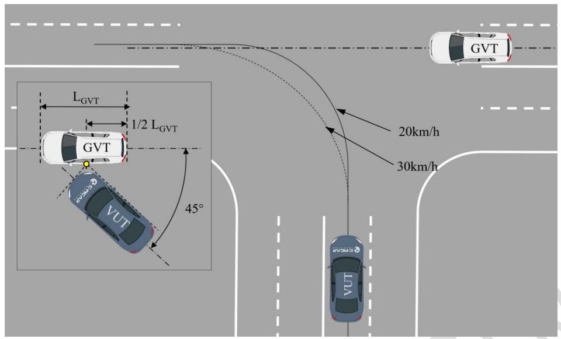
图2: LCPn 近端横穿 — 点击放大| VUT速度 | GVT速度 |
|---|---|
| 10 / 20 | 20 / 40 |
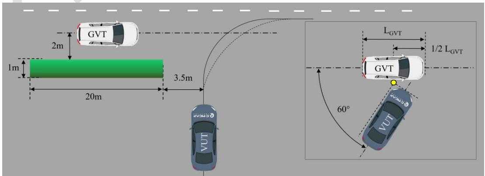
点击放大| VUT速度 | GVT速度 |
|---|---|
| 50 / 60 | 40 / 50 |
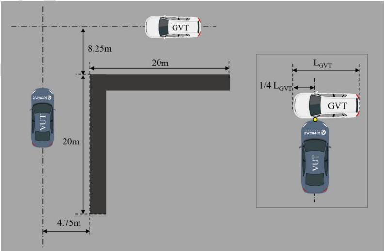
点击放大| VUT速度 (km/h) | PTA速度 (km/h) | 碰撞位置 | 光照 |
|---|---|---|---|
| 20 / 40 / 60 / 80 | 5 (匀速) | 25% | VUT近光灯 + OV远光灯 |
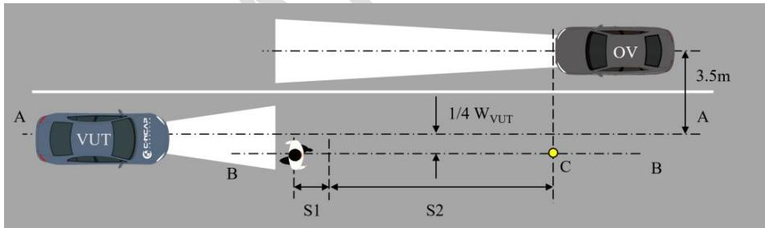
点击放大| VUT速度 (km/h) | PTA速度 (km/h) | 碰撞位置 |
|---|---|---|
| 20 / 40 / 60 | 10 (匀加速) | 25% |
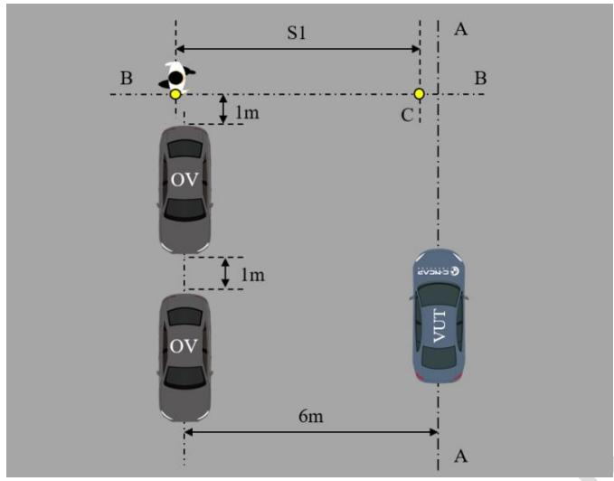
点击放大| VUT速度 (km/h) | PTYC速度 (km/h) | 碰撞位置 | 误作用预测试 |
|---|---|---|---|
| 20 / 40 / 60 | 5 (匀加速→匀速) | 25% | 40km/h, TTC=1.2s |
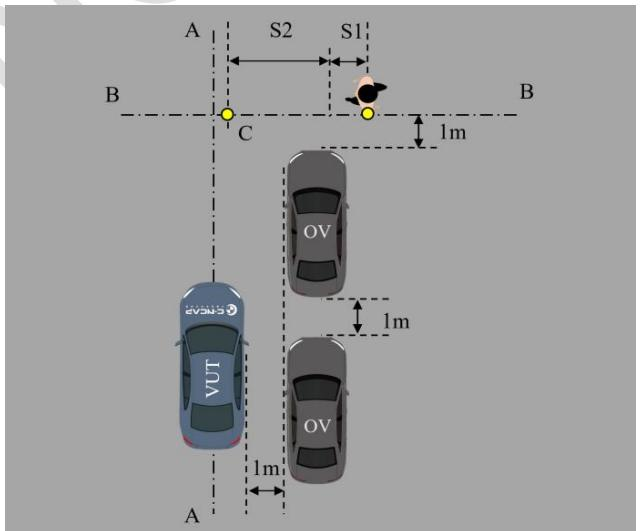
点击放大| VUT速度 (km/h) | PTA速度 (km/h) | 碰撞位置 | 距离D (m) |
|---|---|---|---|
| 20 / 30 | 6.5 → 10 (加速) | 25% | 10.5 / 28.5 |
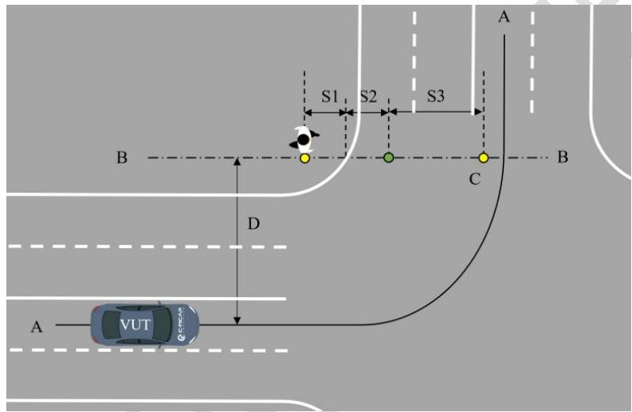
点击放大| VUT速度 (km/h) | 功能 | 转向路径 |
|---|---|---|
| 10 / 20 | AEB | 三阶段欧拉螺旋曲线 (详见规程) |
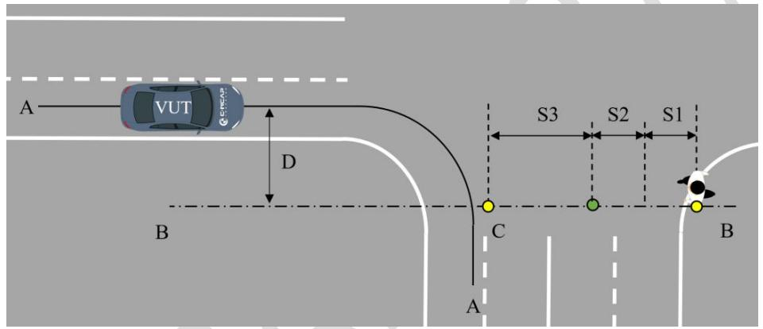
点击放大| 子场景 | VUT速度 | 幼儿状态 | 碰撞位置 |
|---|---|---|---|
| 起步直行 (CPYCL-Start) | 静止起步 | 静止 | 25% |
| 起步转弯 (CPYCL-Start Turning) | 静止起步, 右转 | 静止 | 25% |
| 转弯 (CPYCL-Turning) | 10 km/h, 右转 | 静止 | 25% |
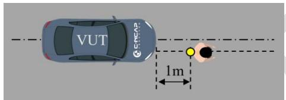
图1: 起步直行/起步转弯 — 点击放大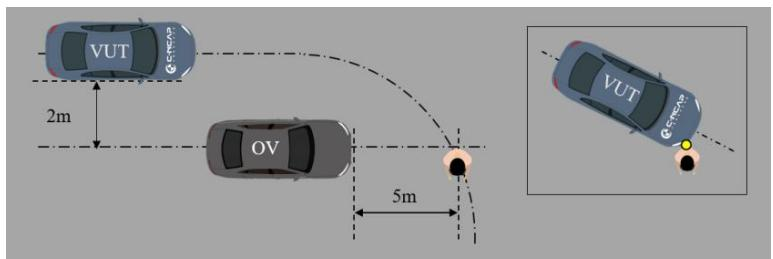
图2: 转弯 — 点击放大| VUT速度 | PTA速度 | 碰撞位置 |
|---|---|---|
| 20 / 40 / 60 | 10 (匀加速) | 25% |
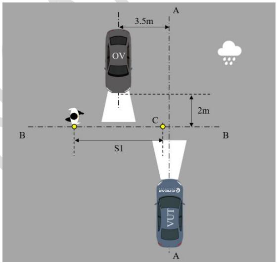
点击放大| VUT速度 | PTA速度 | 碰撞位置 |
|---|---|---|
| 20 / 40 / 60 | 6.5 → 10 km/h | 25% |
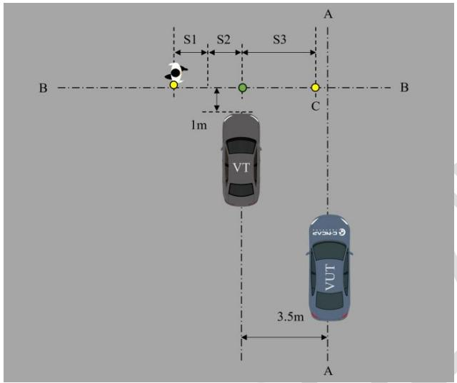
点击放大| VUT速度 | PTYC速度 | 碰撞位置 |
|---|---|---|
| 20 / 40 / 60 | 6.5 (匀加速) | 25% |
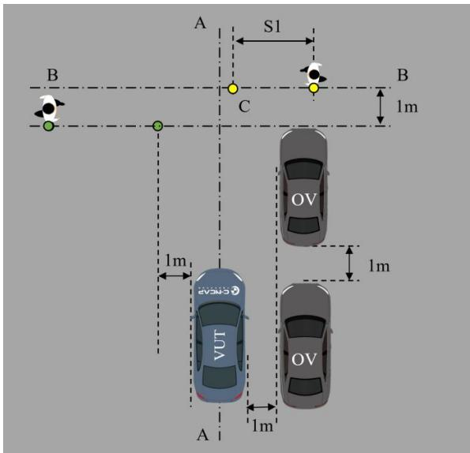
点击放大| VUT速度 | PTA速度 | 碰撞位置 |
|---|---|---|
| 20 / 40 / 60 | 10 (匀加速) | 25% |
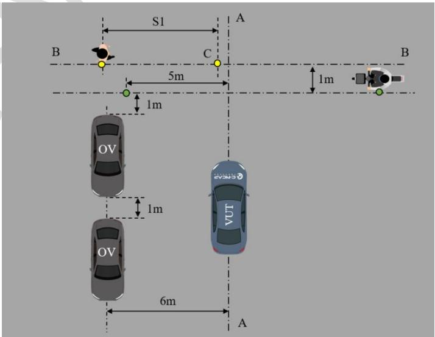
点击放大| VUT速度 | PTA速度 | 碰撞位置 |
|---|---|---|
| 80 / 100 | 10 | 25% |
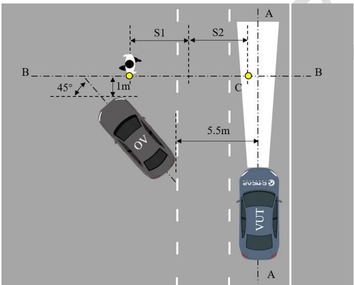
点击放大| VUT & VT速度 | 跟车距A(m) | OV速度 | VT与PTA距离B(m) |
|---|---|---|---|
| 80 | 30 | 0 | 49 |
| 120 | 80 | 0 | 73 |
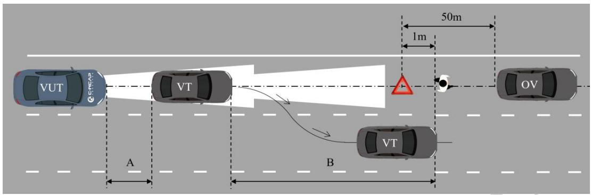
点击放大| VUT速度 (km/h) | EBTA速度 (km/h) | 碰撞位置 |
|---|---|---|
| 40 / 60 / 80 | 20 | 25% |
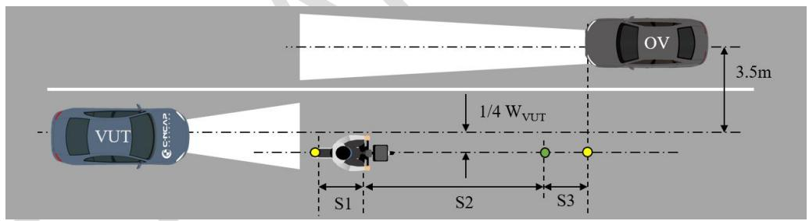
点击放大| VUT速度 | EBTA速度 | 碰撞位置 |
|---|---|---|
| 40 / 60 / 80 | 20 | 25% |
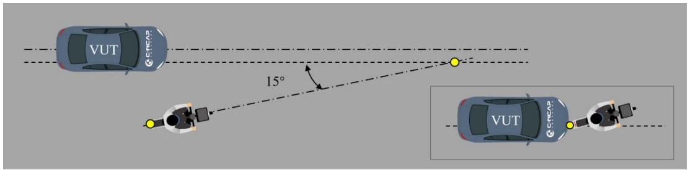
点击放大| VUT速度 | BTA速度 | 碰撞位置 |
|---|---|---|
| 20 / 40 / 60 | 15 | 50% |
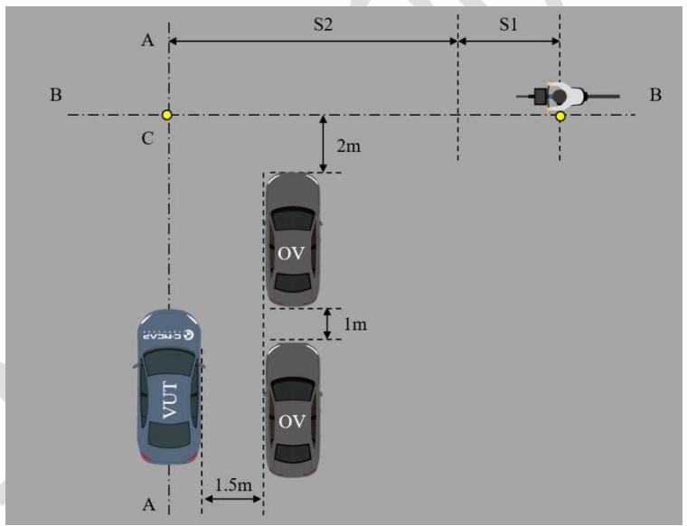
点击放大| 场景 | VUT速度 | STA速度 | 碰撞位置 |
|---|---|---|---|
| 白天 AEB | 20 / 40 / 60 | 30 (加速) | 50% |
| 夜间 AEB | 20 / 40 / 60 | 30 (加速) | 50% |
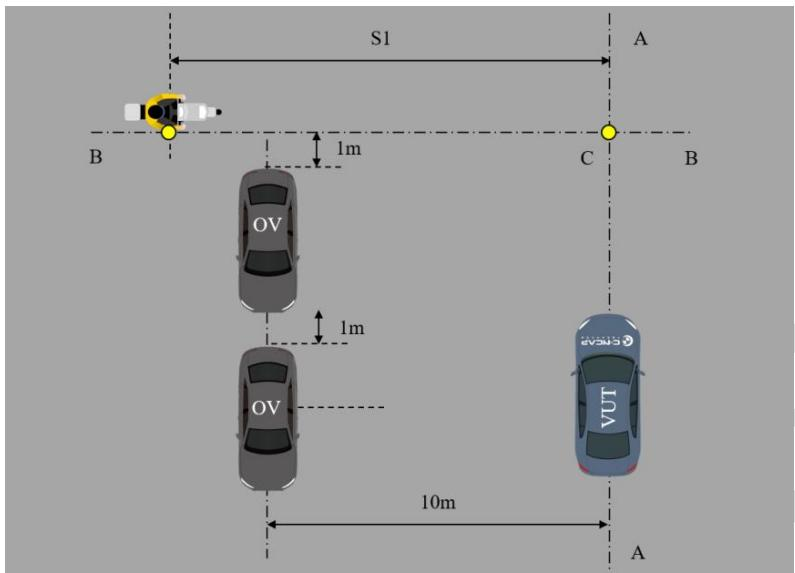
点击放大| VUT速度 | STA速度 | 碰撞位置 |
|---|---|---|
| 20 / 30 | 30 | 50% |
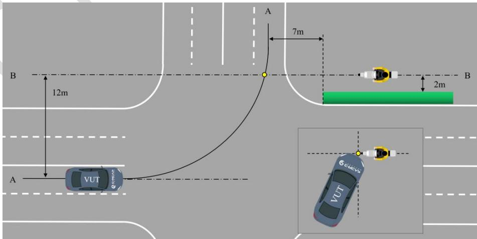
点击放大| VUT速度 | STA速度 |
|---|---|
| 10 / 20 | 30 |
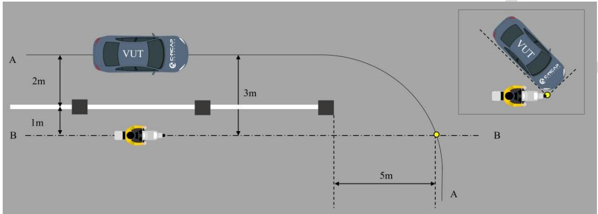
点击放大| VUT速度 | EBTA速度 | 碰撞位置 |
|---|---|---|
| 40 / 60 | 20 | 50% |
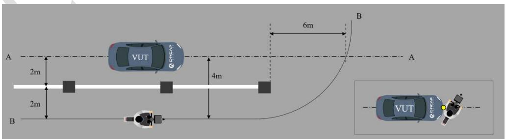
点击放大| VUT速度 | EBTA速度 | 碰撞位置 |
|---|---|---|
| 40 / 60 | 20 | 25% |
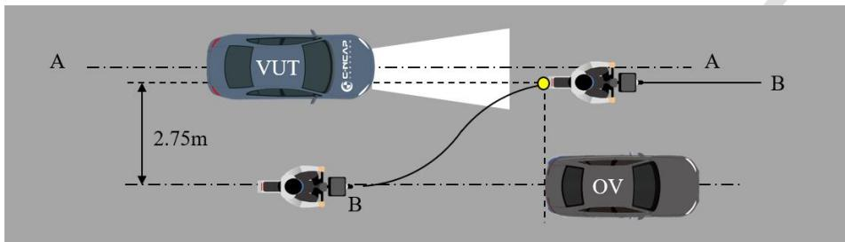
点击放大| VUT速度 | EBTA速度 | 碰撞位置 |
|---|---|---|
| 20 (静止起步) / 40 | 20 | 50% |
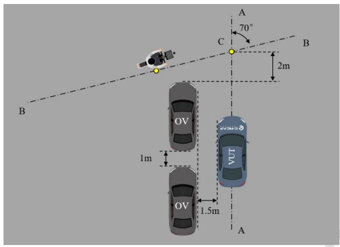
点击放大| VUT速度 | BTA速度 | 碰撞位置 |
|---|---|---|
| 20 / 40 / 60 | 20 → 静止 | 50% |
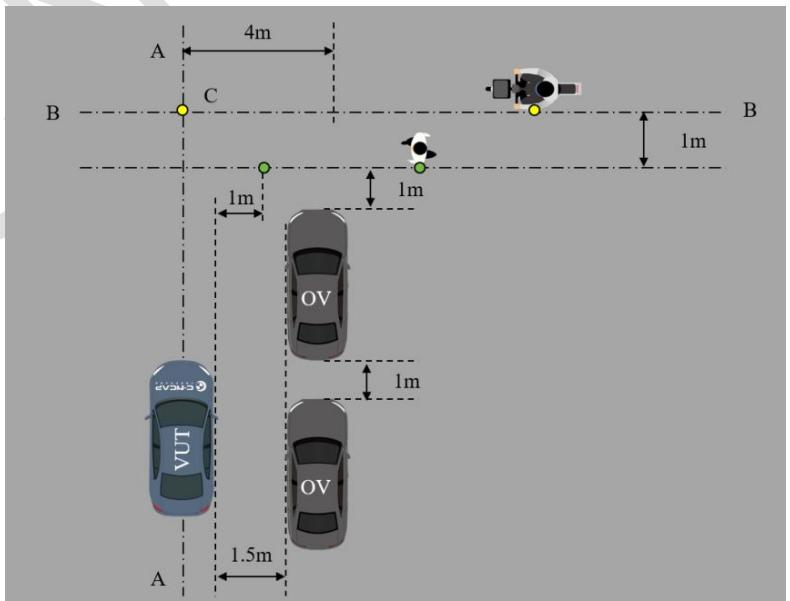
点击放大| VUT速度 | STA速度 | 碰撞位置 |
|---|---|---|
| 20 / 40 / 60 | 30 (加速) | 50% |
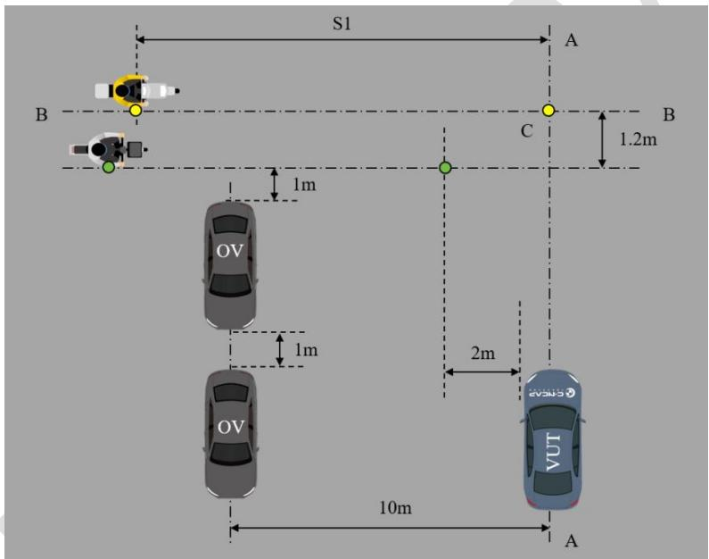
点击放大| VUT速度 | BTA速度 | 碰撞位置 |
|---|---|---|
| 20 / 40 / 60 | 20 (加速) | 50% |
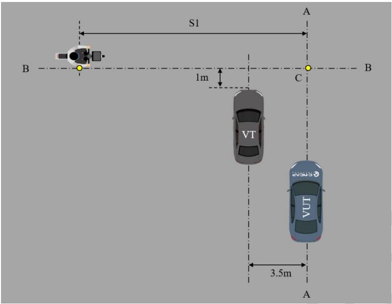
点击放大| VUT速度 | STA速度 |
|---|---|
| 10 / 20 | 30 |
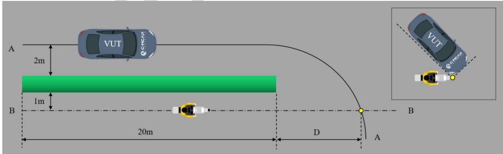
点击放大| VUT速度 | STA速度 |
|---|---|
| 10 / 20 | 30 (加速) |
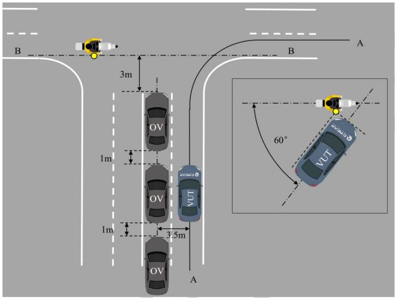
点击放大| VUT速度 | BTA速度 | 碰撞位置 |
|---|---|---|
| 10 / 20 | 15 | 50% |
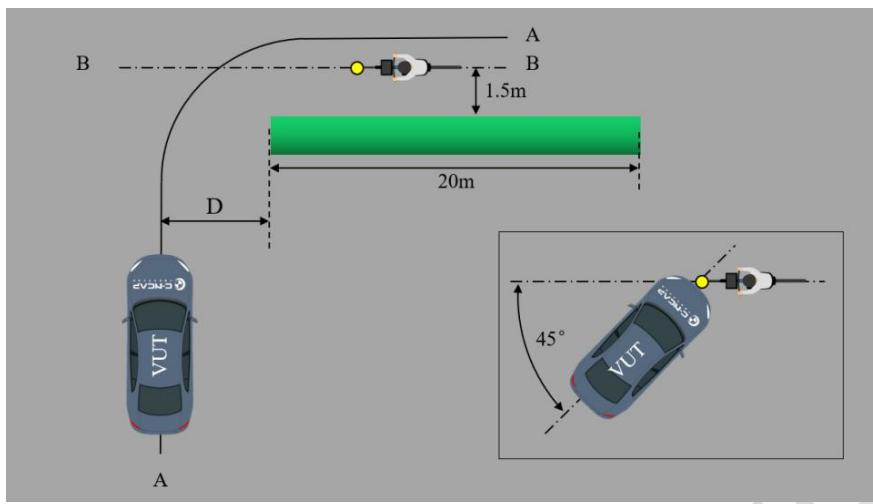
点击放大| VUT速度 | STA速度 | 碰撞位置 |
|---|---|---|
| 60 / 80 | 30 | 25% |
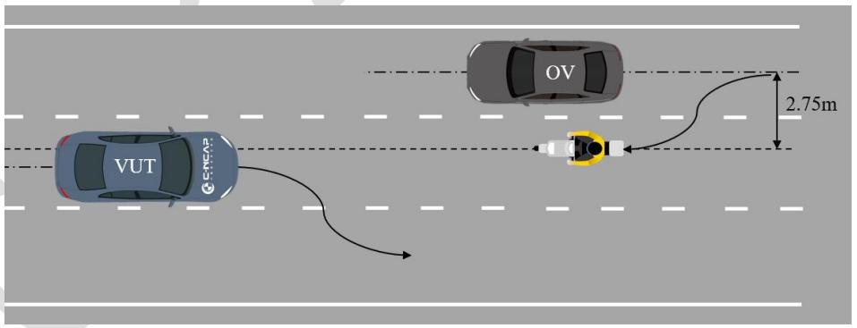
点击放大| VUT速度 | TWTA速度 | 碰撞位置 |
|---|---|---|
| 40 / 60 | 30 | 25% |
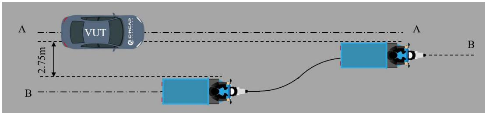
点击放大| VUT速度 | TWTA速度 | 碰撞位置 |
|---|---|---|
| 20 / 40 / 60 | 30 | 50% |
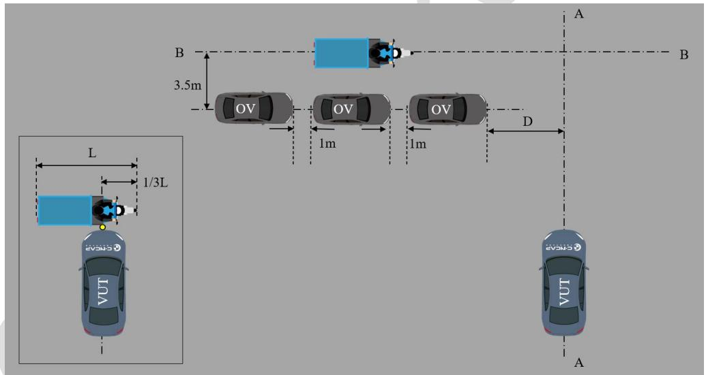
点击放大| VUT速度 | TWTA速度 | 碰撞位置 |
|---|---|---|
| 40 / 60 | 30 | 50% |
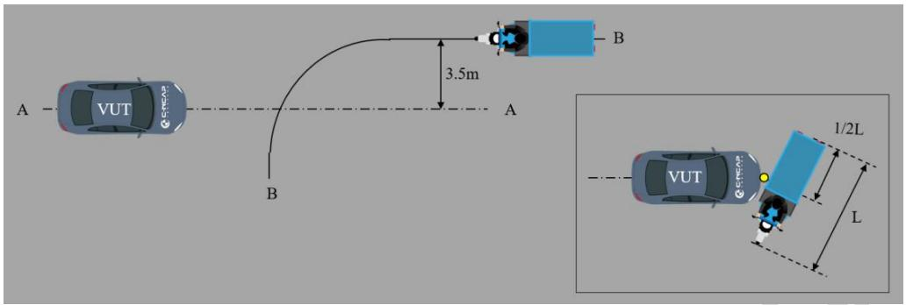
点击放大| 项目名称 | 场景数量 | 各项分值 | 总分值 | 权重分配 |
|---|---|---|---|---|
| 车对行人冲突 | 6基础 + 6拓展 = 12 | 含 CPLA 等12项 | 32 | 基础70% / 拓展30% |
| 车对二轮车冲突 | 6基础 + 10拓展 = 16 | 含 CBLAb 等16项 | 待确认 | 基础70% / 拓展30% |
| 车对三轮车冲突 | 3基础 | CTRc / CTFA / CTFT | 待确认 | 全为基础场景 |
| AES (自动紧急转向) | CPFAh / CPLAh / CSFhol 等 | — | 加分项 | 额外加分 |
| 项目名称 | 场景数量 | 测试类型 | 功能覆盖 |
|---|---|---|---|
| 车对车基础场景 | 6项 (必测) | CCRc / CCRh / CCRb / C2C SCPf / CCFT / CCRbc | AEB + FCW + AES |
| 车对车拓展场景 | 10项 (抽测) | CCRsr / CCRsf / CCFhos / SCPn / SCPmo / CCFTf / LCPf / LCPn / RCPf / SCPso | AEB + FCW + AES |
| 车道保持等ADAS | 多场景 | LKA + ELK + DMS + BSD + DOW + RCTB + ISLS + AMAP | 多种ADAS功能 |